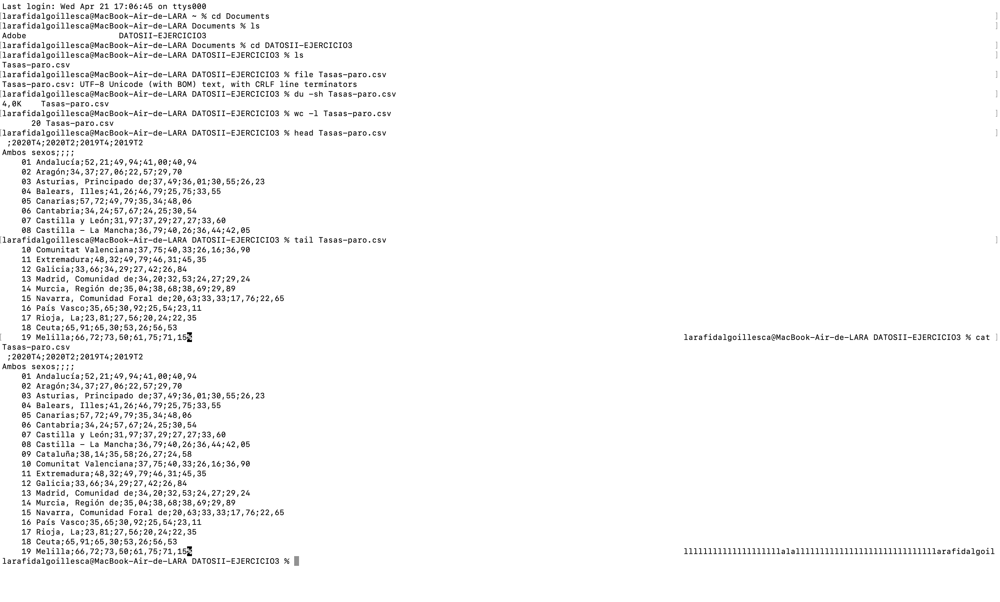

Gráfico de la tasa de paro por distintos grupos de edad, sexo y comunidad autónoma
La tercera actividad de la asignatura se trata de escoger un conjunto de datos, analizarlo desde la línea de comandos, visualizarlo de una o varias formas con Datawrapper y subir tanto la/s visualización/visualizaciones como la metodología que hemos realizado a nuestra web de Github. El primer paso de todos fue obtener los datos desde una página nacional : INE.es (Instituto Nacional de Estadística).
Datos en la línea de comandos
Una vez escogidos lo que he hecho es la siguiente estructura dentro de la terminal: 
El primer paso fue entrar en la terminal y poner "cd Documents" para ir dentro de la respectiva carpeta. El siguiente fue "ls" para conocer que hay en el interior de la carpeta y después busco "cd DATOSII-EJERCICIO3" para ir dentro de este ejercicio. Tras completar estos pasos y entrar en el archivo, escribo en la terminal "File Tasas-paro.csv" para conocer que información hay dentro de este.Lo siguiente que intento saber es cuanto pesa el archivo y para ello, escribo "du -sh Tasas-paro.csv". A continuación lo que quiero saber es cuántas líneas tiene mi archivo, para ello escribo "wc -l Tasas-paro.csv", y como resultado nos da: 20 líneas.
El próximo paso es poner "head Tasas-paro.csv" lo cuál nos enseña las 10 primeras línea de mi documento. Y también utilizamos "tail" que por el contrario nos muestra las 10 últimas líneas. Por último, añadimos "cat Tasas-paro.csv" que lo que hace leer los datos del archivo y mostrar sus contenidos.
Visualizaciones en Datawrapper
Los datos que se utilizan en las visualizaciones son sacados del INE.es y han sido plasmados con la herramienta Datawrapper. Se trata de información sobre las tasas de paro por distintos grupos de edad -elegida la franja de menores de 25 años- , sexo y comunidad autónoma. Se mide en dos temporadas de tiempo: 2020T4 - 2020T2 - 2019T2 - 2019T4 . Se distingue cada una de ellas por diferentes tonalidades de azul y las cifras son en %.